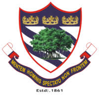

Boys High school
Boys' High School and College, is an independent school in Allahabad, India. It was founded in 1861 to provide a Christian education to the children of Europeans and Anglo-Indians, but has always accepted children from all backgrounds. Though originally co-educational, it now admits only boys